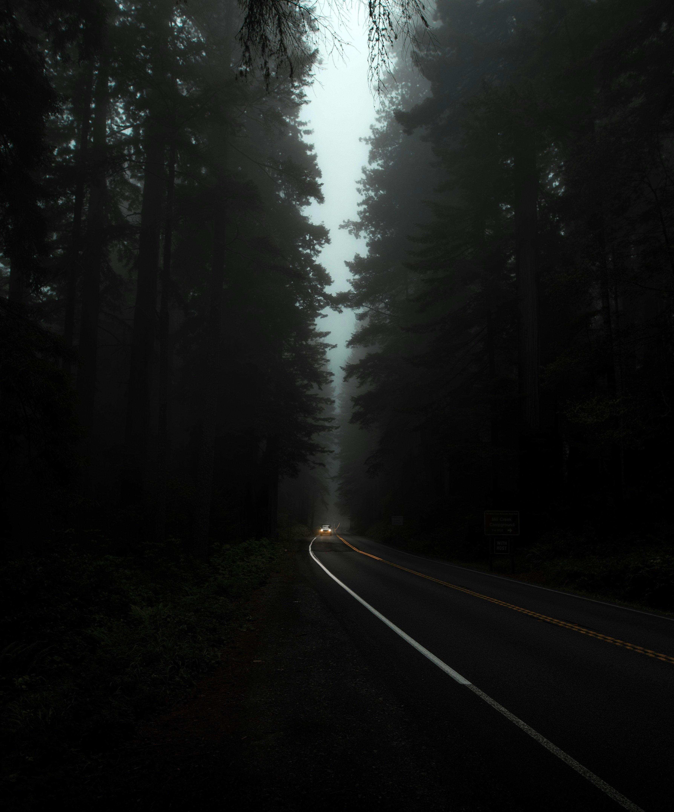

Добре дошли в света на фотографията

Фотографията не е просто натискане на бутон. Тя е начин на живот, изкуство да виждаш света по различен начин и магията да замразиш времето. В този сайт ще ви преведем през основните аспекти на фотографското изкуство – от избора на камера до перфектната композиция.